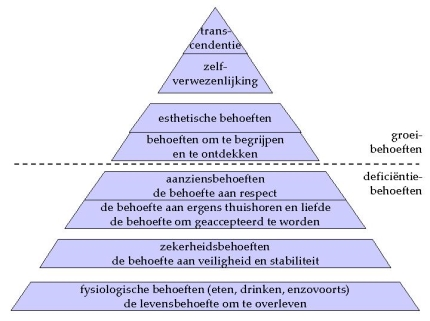
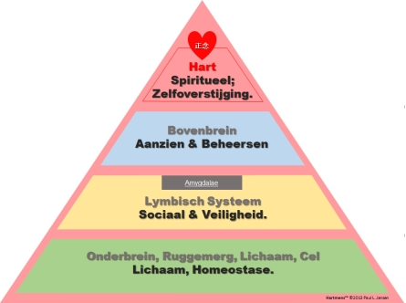

Het was de Amerikaanse klinisch psycholoog
Abraham Maslow die orde probeerde te ontdekken in de behoeften
van(uit) een organisme. In 1943 publiceerde hij als grondlegger van
de humanistische psychologie zijn 'hiërarchische ordening van
behoeften' en al snel waren er die zijn overzicht in de vorm van
een piramide goten: de piramide van Maslow. Zijn oorspronkelijke
'piramide' is nog steeds erg populair en in gebruik bij
sociologisch onderzoek, management training en hoger psychologie
onderwijs.
Wat interessant is in de context van dit boek, is
dat op latere leeftijd Maslow zijn 'hoogste vorm van menselijke
behoefte' van Zelfactualisatie of Zelfverwerkelijking (wat prima in laag C van het
Hartmens™ model past) veranderde naar Zelftranscendentie
, en dat is de hart-laag, niveau 4 in het Hartmens™
model.
Wat Maslow er toe heeft gebracht om de
actualisatie
of verwerkelijking van het
zelf anders te
‘framen’ was wellicht dat alle onderste lagen van de
piramide volgens Maslow 'deficiency needs' ofwel 'behoeften
veroorzaakt door tekorten' zijn. Vanuit 'de hele puzzel mens'
gerekend zouden die, volgens mij in ieder geval, perfect passen bij
de functionaliteiten van het brein. De functie van het brein
beschreven als 'ervoor zorgen dat er nooit tekorten ontstaan zodat
er nooit behoeften ontstaan'.
Overigens ben ik het met iedereen eens die het
gelijktijdig bestaan van verschillende behoeften op verschillende
niveaus erkent.
Elk niveau van bestaan heeft haar eigen behoeften
en haar eigen gespecialiseerde systeem (onderdeel, niveau) om de
kans op het voorzien worden in bepaalde behoefte te vergroten.
Verreweg de meeste voorstellingen van de piramide van Maslow
sluiten echter niet goed aan op dat werk van Maslow, in het
bijzonder niet op de verandering die Maslow aan het eind van zijn
carrière toepaste op de bovenkant van de piramide. Een van de
betere Maslow-piramides komt van Gert Jan
Schop:

In het Hartmens™ model past het volledige
en actuele gedachtengoed van Maslow prima. De
'hiërarchische ordening van behoeften' in het Hartmens™
model.

"Een Mens
moet Menselijk willen, voelen, denken en handelen om uiteindelijk
ultieme vrede met zichzelf te bereiken. Wat een Mens kán zijn,
dat moet hij zijn."
~Paul
Jansen (Abraham
Maslow parafraserend)